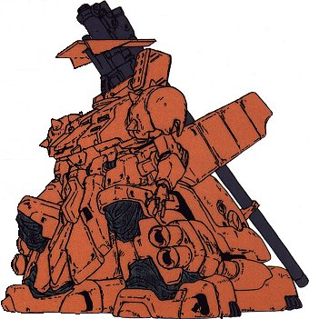

| MS-16M Xamel Super Heavy Land Combat Artillery Zeon Duchy Mobile Suit |
|
|  | |
General and Technical Data |
|
|
Model number: MS-16M Code name: Xamel Unit type: long-range support mobile suit Operator: Zeon Duchy Dimensions: overall height 27 meters Weight: empty 75.0 metric tons; max gross 121.5 metric tons Construction: titanium/ceramic composite on monocoque frame Powerplant: Minovsky type ultracompact fusion reactor, output rated at 1080 kW Propulsion: thermonuclear "ground-effect" hover jet thrusters, total output unknown; rocket thrusters, 6 x 10300 kg total Performance: thruster acceleration 0.51 G; maximum ground hovering speed 220 km/h Fixed armaments: 680mm artillery cannon, barrel folds for transport, mounted over right shoulder; 20mm vulcan gun, mounted in head; 8-tube missile launcher, mounted on left shoulder Optional hand armaments: 360mm giant bazooka, clip-fed, 5 rounds per clip Magnetic Storage Racks:1, across back |
|
| Technical and Historical Notes | |
|
In order to provide long-range firepower superior to even the Zaku Cannon's, the MS-16M Xamel was contrived. It looks less like a mobile suit and more like a tank than anything else of its kind, and its giant howitzer is a force to be reckoned with.
The Xamel is propelled much in the same was as the Dom series, and mounts a thermonuclear hover jet in each leg and several in its giant skirt. It is well armored, and has the same dust filters and sand protection gear as the Dom Funf desert combat variant. This allows it to quickly enter combat, deploy, fire a salvo, then get moving again before the enemy can locate its position. The Xamel's primary weapon is a massive 680mm artillery cannon. It is extremely accurate and can easily hit targets well over fourty-five kilometers away. Intended to destroy reinforced bunkers and land battleships, needless to say a Federal mobile suit would be wrecked beyond capacity. An eight-tube missile launcher, capable of firing long and short range missiles, rotates out of a storage bay on its left shoulder. Finally, a 20mm vulcan gun is mounted on a turret on top of the Xamel's flat head. Its scrawny arms sometimes carry a Dom's 360mm giant bazooka.
It's intended more for long-range support, but its thick armor and tamendous mass alone make it a substantial threat to mobile suits attempting to engage it in close range.
|
 RPG quick stats sheet
RPG quick stats sheet | Weapons and Features | |
|
|
|